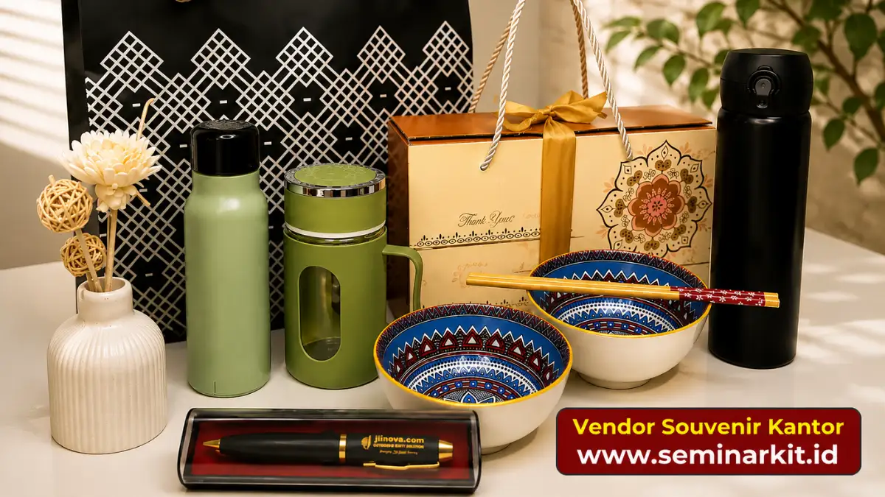

Jenis souvenir corporate yang populer meliputi alat tulis custom, tumbler, tas, gantungan kunci, hingga hampers, yang dipilih berdasarkan fungsi dan target penerima.
- Alat tulis dan tumbler termasuk souvenir fungsional yang paling sering dipesan.
- Tas dan hampers biasanya digunakan untuk klien atau acara khusus.
- Souvenir elektronik cocok untuk kesan lebih premium.
- Pemilihan jenis souvenir sebaiknya mempertimbangkan siapa penerimanya.
- Souvenir ramah lingkungan semakin banyak diminati perusahaan.
Apa Saja Jenis Souvenir Corporate yang Paling Sering Dipakai?
Jenis souvenir corporate yang paling sering dipakai adalah alat tulis custom, tumbler, dan tas, karena bersifat fungsional dan mudah digunakan sehari-hari.
Alat tulis seperti pulpen dan notebook umumnya menjadi pilihan awal karena biaya produksinya relatif terjangkau dan cocok dibagikan dalam jumlah besar, misalnya pada seminar atau pameran.
Tumbler juga populer karena mendukung gaya hidup ramah lingkungan sekaligus memberi eksposur logo yang terlihat berulang kali oleh penerima.
Tas, baik tas kerja maupun tas serbaguna, sering dipilih untuk acara dengan skala lebih formal seperti konferensi atau kunjungan klien, karena kesan yang ditimbulkan lebih premium dibanding alat tulis biasa.

Souvenir Apa yang Cocok untuk Klien Korporat?
Souvenir yang cocok untuk klien korporat umumnya berupa barang dengan kesan premium, seperti tas kerja, hampers eksklusif, atau perangkat elektronik kecil dengan kemasan rapi.
Untuk klien, kualitas kemasan dan finishing produk menjadi faktor penting karena mencerminkan citra profesional perusahaan.
Hampers berisi kombinasi produk seperti makanan ringan premium, alat tulis, dan merchandise branded sering dipilih untuk momen tertentu, seperti akhir tahun atau perayaan kerja sama bisnis.
Souvenir Apa yang Cocok untuk Karyawan?
Souvenir yang cocok untuk karyawan biasanya berupa barang fungsional harian, seperti tumbler, kaos, atau tas ransel, yang dapat digunakan dalam aktivitas kerja maupun pribadi.
Selain nilai fungsional, souvenir untuk karyawan juga sering dikaitkan dengan momen tertentu seperti ulang tahun perusahaan, pencapaian target, atau program apresiasi kerja. Barang yang dipilih sebaiknya nyaman digunakan dan mencerminkan identitas brand secara halus, tanpa terkesan berlebihan.
Apakah Gantungan Kunci dan Barang Kecil Masih Relevan?
Gantungan kunci dan barang kecil lainnya masih relevan sebagai souvenir corporate karena biaya produksinya rendah dan cocok dibagikan dalam jumlah besar pada acara umum.
Barang kecil seperti gantungan kunci, stiker, atau pin sering digunakan sebagai pelengkap dalam goodie bag acara, terutama saat anggaran terbatas namun tetap ingin membagikan sesuatu kepada seluruh peserta acara.
Bagaimana Memilih Jenis Souvenir Sesuai Acara?
Cara memilih jenis souvenir sesuai acara adalah dengan menyesuaikan skala acara, target peserta, dan tujuan pemberian souvenir tersebut.
Beberapa pertimbangan praktis:
- Acara skala besar dengan banyak peserta cocok menggunakan souvenir biaya terjangkau seperti alat tulis atau gantungan kunci.
- Acara eksklusif dengan jumlah peserta terbatas dapat menggunakan souvenir premium seperti tas atau hampers.
- Acara internal perusahaan dapat memilih souvenir yang mendukung kebutuhan kerja sehari-hari karyawan.
Panduan lengkap mengenai definisi dan manfaat souvenir corporate secara umum dapat dibaca pada artikel panduan lengkap souvenir corporate.
Pemilihan jenis souvenir corporate sebaiknya disesuaikan dengan target penerima, skala acara, dan anggaran yang tersedia.
Barang fungsional seperti alat tulis dan tumbler cocok untuk kebutuhan umum, sementara tas dan hampers lebih sesuai untuk klien atau momen khusus.

Banner promosi: klik gambar untuk langsung terhubung ke WhatsApp tim sales.